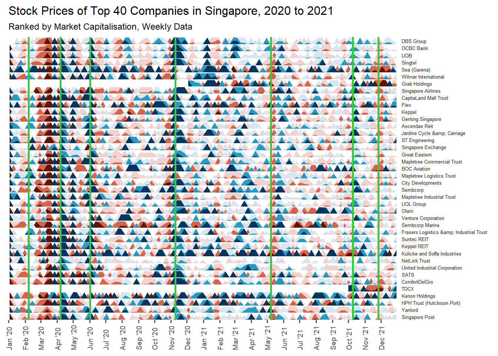

Show the code
pacman::p_load(tidyverse, knitr, rmarkdown, tidyquant, lubridate, ggthemes, data.table, ggHoriPlot)January 2, 2022
In this take-home exercise, we will explore the impact of COVID-19 on the stock prices of top 40 companies in Singapore by market capitalisation.
The data extraction and cleaning required some effort as the company names had to be referenced from another table, and extracted using the tidyquant package. Some experimentation also had to be done to optimise the frequency of the data to be extracted, as daily data may lower the clarity due to minute fluctuations as compared to weekly data.
The horiplot required extensive customisation to make it aesthetically pleasing, such as the sizing of the text fonts, adjusting the scale of the colour and the origin of the graph. Furthermore, as a time series scale was used for the x-axis, the date labels required special customisation using the scale_x_date function.
Coming from a non-financial background, the task took abit of research to figure out financial terms and technical standards for stock market price monitoring
The study requires a certain level of data transformation and several widgets to create an interactive visualisation.
Transform with filter( ) function, and add widgets via :
plotly::hovermenu( ),
plotly::updatemenus( ),
plotly::layout-sliders( ).
The study requires a certain level of data transformation and several widgets to create an interactive visualisation.
Transform with filter( ) function, and add widgets via :
plotly::hovermenu( ),
plotly::updatemenus( ),
plotly::layout-sliders( ).
The study requires a certain level of data transformation and several widgets to create an interactive visualisation.
Transform with filter( ) function, and add widgets via :
plotly::hovermenu( ),
plotly::updatemenus( ),
plotly::layout-sliders( ).
The following are the packages required for this exercise :
Usage of the code chunk below :
p_load( ) - pacman - to load packages into R environment. This function will attempt to install the package from CRAN or the pacman repository list if it is not installed.
Remarks :
Packages to consider -
sf, tidyverse, questionr, janitor, psych, ggplot2, gcookbook, tmap, ggpubr, egg, corrplot, gtsummary, regclass, caret, heatmaply, ggdendro, cluster, factoextra, spdep, ClustGeo, GGally, skimr, stringr, funModeling, knitr, caTools, viridis, rgeoda, cowplot, patchwork.
tidyverse : A collection of core packages designed for data science, used extensively for data preparation and wrangling.
knitr: Package used for dynamic report generation
rmarkdown: Used to convert R Markdown documents into a variety of formats.
corrplot: Used for plotting a correlation matrix, test for correlation, and other visualization methods about association and correlation.
ggstatsplot: Used for creating graphics with details from statistical tests included
heatmaply: Used to plot ‘heatmap’, a popular graphical method for visualizing high-dimensional data
parallelPlot: Used to create a parallel coordinates plot
!!!!! need to update!
R packages and functions used in this exercise :
readr :
read_csv( ) -
base :
ggplot2 :
dplyr :
summarise( ) -
The dataset used for this practice is the stock prices of top 40 companies in Singapore by market capitalisation between 1st January 2020 - 31st December 2021.
Kaggle Starbucks nutrition data set
Usage of the code chunk below :
read_csv( ) - readr - to read CSV file into a tibble.
problems( ) - readr - to reveal any parsing errors when importing the CSV file.
Rows: 53 Columns: 6
── Column specification ────────────────────────────────────────────────────────
Delimiter: ","
chr (3): Name, Symbol, country
dbl (3): Rank, marketcap, price (USD)
ℹ Use `spec()` to retrieve the full column specification for this data.
ℹ Specify the column types or set `show_col_types = FALSE` to quiet this message.# A tibble: 0 × 5
# … with 5 variables: row <int>, col <int>, expected <chr>, actual <chr>,
# file <chr>Rows: 53
Columns: 6
$ Rank <dbl> …
$ Name <chr> …
$ Symbol <chr> …
$ marketcap <dbl> …
$ `price (USD)` <dbl> …
$ country <chr> …| Rank | Name | Symbol | marketcap | price (USD) | country |
|---|---|---|---|---|---|
| 1 | DBS Group | D05.SI | 65157130700 | 25.32 | Singapore |
| 2 | OCBC Bank | O39.SI | 40864457238 | 9.09 | Singapore |
| 3 | UOB | U11.SI | 38371794525 | 22.91 | Singapore |
| 4 | Singtel | Z74.SI | 31683620839 | 1.92 | Singapore |
| 5 | Sea (Garena) | SE | 29227227136 | 52.03 | Singapore |
| 6 | Wilmar International | F34.SI | 19429093823 | 3.11 | Singapore |
Since the dataset is already ranked by market capitalisation, we can extract the Top 40 by using head().
Remarks :
The “Caffein(mg)” variable consist of mixed values including absolute and values in range.
First remove special character, then replace the range values with the maximum value.
Remove special character from ‘40+’.
Only the columns containing the symbol and name of the company were extracted, and the columns were renamed in preparation for joining of tables later on.
The company symbols and names were listed using as.vector() function according to the rank.
Using the list of Top 40 symbols, the stock prices of the companies from 2020 to 2021 were extracted using the tidyquant package. Weekly period was used as it provides a longer term comparison compared to daily period, which may be too fluctuative to point out major trends.
| symbol | date | open | high | low | close | volume | adjusted |
|---|---|---|---|---|---|---|---|
| D05.SI | 2020-01-03 | 26.17 | 26.32 | 25.83 | 26.00 | 4336600 | 22.52781 |
| D05.SI | 2020-01-10 | 26.00 | 26.12 | 25.92 | 26.00 | 7869500 | 22.52781 |
| D05.SI | 2020-01-17 | 26.45 | 26.45 | 26.32 | 26.35 | 2347500 | 22.83107 |
| D05.SI | 2020-01-24 | 26.37 | 26.38 | 26.16 | 26.20 | 1474500 | 22.70110 |
| D05.SI | 2020-01-31 | 25.62 | 25.65 | 25.20 | 25.37 | 8167400 | 21.98194 |
| D05.SI | 2020-02-07 | 25.57 | 25.65 | 25.21 | 25.31 | 5097800 | 21.92996 |
Remarks :
The
The weekly rate of change of stock price was calculated using the adjusted price.
To identify the largest drink names, the group_by() function was used to group the orders by name and summarise() was used to count (i.e. n()) the total number of drinks for each name. Then, arrange(desc) was used to sort the data and top_n() was used to select and identify the top 3 largest names. filter() was used to display rows of drinks that are in the top 3 largest names. They are iced coffee, hot chocolate and pumpkin spice crème.
Next, the names of the companies were added to the stock price dataset using merge(), because it is easier to identify name than symbols in the visualisation.
Usage of the code chunk below :
as.integer( ) - base - to convert both Time and Pop from double object to integer object.
mutate( ) - dplyr - to add the converted variables into the data frame.
| symbol | date | open | high | low | close | volume | adjusted | change | name |
|---|---|---|---|---|---|---|---|---|---|
| 2588.HK | 2020-01-03 | 78.75 | 78.95 | 77.90 | 78.20 | 517909 | 69.56585 | 3578.0880309 | BOC Aviation |
| 2588.HK | 2020-01-10 | 72.45 | 75.20 | 72.35 | 74.35 | 2092454 | 66.14093 | -4.9232764 | BOC Aviation |
| 2588.HK | 2020-01-17 | 74.90 | 75.00 | 74.25 | 74.70 | 482330 | 66.45229 | 0.4707463 | BOC Aviation |
| 2588.HK | 2020-01-24 | 71.65 | 72.65 | 71.60 | 72.55 | 311990 | 64.53968 | -2.8781643 | BOC Aviation |
| 2588.HK | 2020-01-31 | 71.50 | 72.55 | 71.35 | 71.80 | 692375 | 63.87249 | -1.0337671 | BOC Aviation |
| 2588.HK | 2020-02-07 | 75.60 | 75.60 | 74.55 | 75.05 | 395475 | 66.76365 | 4.5264542 | BOC Aviation |
Lastly, the rows were ordered by the name of the stock in descending order of the market capitalisation value.
| symbol | date | open | high | low | close | volume | adjusted | change | name |
|---|---|---|---|---|---|---|---|---|---|
| D05.SI | 2020-01-03 | 26.17 | 26.32 | 25.83 | 26.00 | 4336600 | 22.52781 | NA | DBS Group |
| D05.SI | 2020-01-10 | 26.00 | 26.12 | 25.92 | 26.00 | 7869500 | 22.52781 | 0.0000000 | DBS Group |
| D05.SI | 2020-01-17 | 26.45 | 26.45 | 26.32 | 26.35 | 2347500 | 22.83107 | 1.3461809 | DBS Group |
| D05.SI | 2020-01-24 | 26.37 | 26.38 | 26.16 | 26.20 | 1474500 | 22.70110 | -0.5692637 | DBS Group |
| D05.SI | 2020-01-31 | 25.62 | 25.65 | 25.20 | 25.37 | 8167400 | 21.98194 | -3.1679345 | DBS Group |
| D05.SI | 2020-02-07 | 25.57 | 25.65 | 25.21 | 25.31 | 5097800 | 21.92996 | -0.2365077 | DBS Group |
Horizon plots are a type or plots frequently used in time-series data to represent a moving value.
The figure below shows a horizon plot using the ggHoriplot package. The palette ‘RdBu’ was used to provide the contrast between negative (red) and positive (blue) rate of change. Vertical x-intercept dashed-lines were added to represent key milestones in Singapore’s covid-19 journey, which will be explained later on.
ggplot() +
geom_horizon(aes(date, change),
data = stock_data_weekly,
origin = 0,
horizonscale = c(-15, -5, -1, 0, 1, 3, 5)) +
scale_fill_hcl(palette = 'RdBu') +
facet_grid(name~.)+
theme_few() +
theme(
panel.spacing.y=unit(0, "lines"),
plot.title = element_text(size=12),
plot.subtitle = element_text(size=9),
strip.text.y = element_text(size = 5, angle = 0, hjust = 0),
axis.text.y = element_blank(),
axis.title.y = element_blank(),
axis.ticks.y = element_blank(),
axis.text.x = element_text(size = 7, angle = 90, hjust = 0, vjust = 0.5),
axis.title.x = element_blank(),
panel.border = element_blank(),
legend.position="none"
) +
scale_x_date(expand=c(0,0),
date_breaks = "1 month",
date_labels = "%b '%y",
limit=c(as.Date("2020-01-01"),as.Date("2021-12-31"))) +
xlab('Date') +
ggtitle('Stock Prices of Top 40 Companies in Singapore, 2020 to 2021',
'Ranked by Market Capitalisation, Weekly Data') +
geom_vline(xintercept = as.Date("2020-02-07"), color = "limegreen", size = 1) +
geom_vline(xintercept = as.Date("2020-04-07"), color = "limegreen", size = 1) +
geom_vline(xintercept = as.Date("2020-06-02"), color = "limegreen", size = 1) +
geom_vline(xintercept = as.Date("2020-11-09"), color = "limegreen", size = 1) +
geom_vline(xintercept = as.Date("2021-05-08"), color = "limegreen", size = 1) +
geom_vline(xintercept = as.Date("2021-10-09"), color = "limegreen", size = 1) +
geom_vline(xintercept = as.Date("2021-11-26"), color = "limegreen", size = 1) Warning: Using `size` aesthetic for lines was deprecated in ggplot2 3.4.0.
ℹ Please use `linewidth` instead.Warning: Using the `size` aesthetic in this geom was deprecated in ggplot2 3.4.0.
ℹ Please use `linewidth` in the `default_aes` field and elsewhere instead.
Remarks :
The
On Feb 7 2020, COVID-19 Disease Outbreak Response System Condition (DORSCON) to orange, signalling that the disease is severe and there is widespread transmission from unknown sources. This is highest level ever reached since the SARS outbreak in 2003. The severity of the pandemic caused panic and uncertainty amongst business and citizens. More countries were also entering a lockdown state to contain the spread, disrupting global trade flows which exacerbated the market. Hence, spurring on the COVID-19 financial crash in March 2020, which not only impacted Singapore but all major stock markets as well. The March 2020 COVID-19 crash was a short-lived bear market, and in April 2020 stock markets re-entered a bull market.
On Apr 7 2020, the Singapore government took a drastic step and introduced the circuit breaker period, where citizens practised enhanced social distancing and isolation. Workplaces and schools closed and most shops shuttered. Businesses were badly impacted by the drop in footfall and consumption. However, the stock market seem to be recovering from the crash in March. One reason could be the implementation of the Budgets the Government has dedicated to support Singaporeans and businesses in the battle against COVID-19, which amounted close to $100 billion. Secondly, businesses were also adapting to the change in consumer patterns through contactless digital systems, which were well-received.
On Jun 2 2020, the circuit breaker is eased and Singapore enters its first phase of reopening, where businesses and activities are progressively allowed to resume, giving rise to some semblance of normalcy. Hence, causing the stock price in the market to rise.
In Nov 2020, Pfizer and BioNTech SE announced a vaccine candidate that has demonstrated evidence of efficacy against COVID-19. As the news brought about positivity of a potential return of normal activity, many shares of companies soared. Since Dec 2020, the National Vaccination Campaign commenced and in late 2021, Singapore became the world’s most-vaccinated country, with more than 85% of its total population fully-vaccinated.
By May 2021, the Delta variant of COVID-19 had widely spread, causing several clusters across the nation. The re-opening efforts put forth by the Government were heldback, Singapore reverted back to Phase 2 from 8 May, which was subsequently tightened to Phase 2 Heightened Alert from 16 May. This tightening of measures caused the stock market prices to dip.
Since then, the nation has acknowledged that the Zero-Covid strategy is no longer feasible due to highly infectious variants formed. It has engaged a cautions re-opening strategy to enable Singaporeans to resume their lives, participate in social activities, open the borders and revive the economy. One such example would be the Vaccinated Travel Lane (VTL) which allowed fully-vaccinated Singaporean citizens and permanent residents to return to Singapore without quarantine. On 9 Oct 2021, it was announced that Singapore would open up more VTLs with other countries, including South Korea and the United States. This saw some rise in the stock market prices, especially companies who stand to gain most such as Singapore Airlines and SATS.
On 26 Nov 2021, the World Health Organisation (WHO) announced the Omicron variant discovery of COVID-19. While there was some dip to the stock market prices, due to lack of information on the virus, the impact seems to be lower than the Delta and Alpha variant of the virus for most companies.